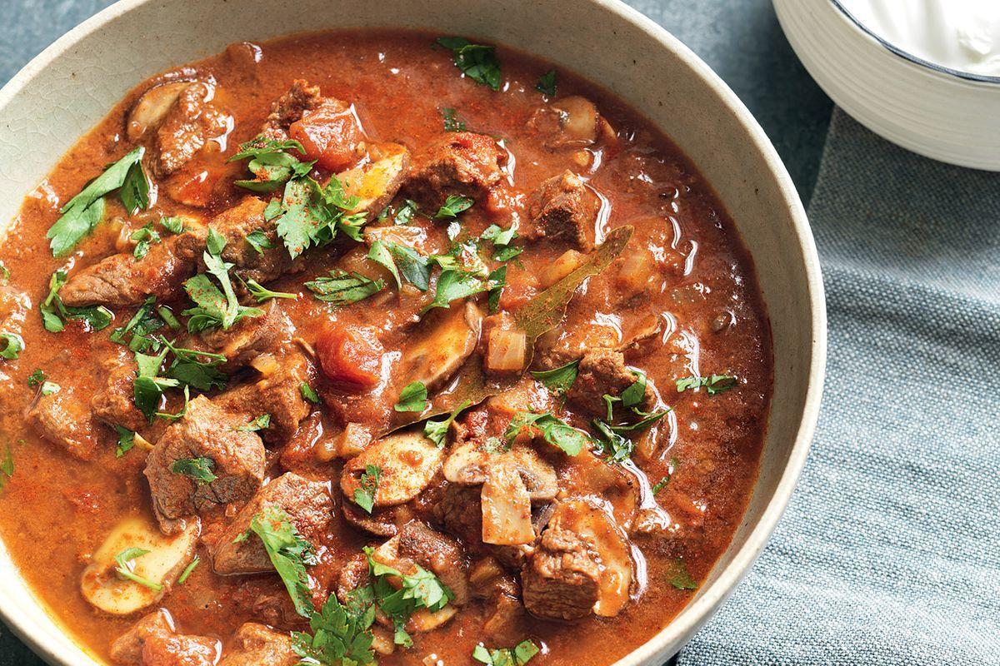

Goulash

Description
This is a traditional Hungarian beef dish served over buttered noodles. Melt in your mouth comfort food!
Ingredients
- 1 tablespoon vegetable oil
- 1 large onion, chopped
- 1 1/2 pounds beef stew meat, cut into 1 inch cubes
- 1 clove garlic, minced
- 2 tablespoons all-purpose flour
- 2 tablespoons Hungarian sweet paprika
- 3/4 teaspoon salt
- 1/2 teaspoon caraway seeds
- 1/4 teaspoon ground black pepper
- 1/4 teaspoon dried marjoram
- 1 pinch cayenne pepper
- 1 1/2 cups beef broth
- 1 cup tomato sauce
- 1 cup thinly sliced carrots
- 1 cup chopped green bell pepper
- 1 cup sour cream
- 1/4 cup chopped fresh parsley
Steps
- Heat oil in a large saucepan over medium heat. Saute onions until soft and translucent. Stir in beef, garlic, flour, paprika, salt, caraway, pepper, marjoram, and cayenne. Cook 5 minutes, stirring frequently.
- Stir in broth and tomato sauce. Bring to a boil, stirring frequently. Reduce heat to low. Simmer 1 hour, stirring occasionally.
- Stir in carrots and bell peppers. Simmer 30 minutes, until vegetables are tender. Stir in sour cream and parsley. Simmer 15 to 30 minutes, stirring occasionally, until sauce is thickened.